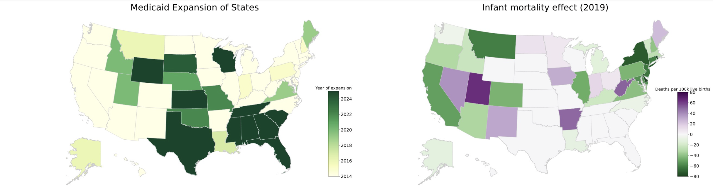
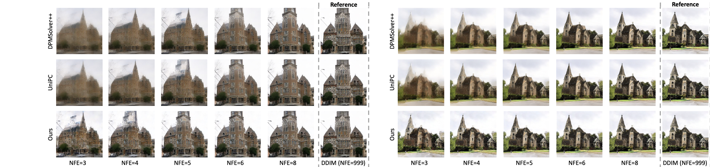

Yuling Yan
 |
Starting Aug 2024, I am an assistant professor in the Department of Statistics at University of Wisconsin-Madison. Previously, I spent one year as a Norbert Wiener Postdoctoral Associate at MIT, working with Professor Philippe Rigollet and Professor Martin Wainwright. I obtained my Ph.D. degree at Princeton University in 2023, advised by Professor Yuxin Chen and Professor Jianqing Fan. I received my bachelor's degree from Peking University in 2018. Research interests: statistics, mathematics of data science, and their applications to generative AI and social sciences. Contact: E-mail: yuling.yan [@] wisc [DOT] edu |
Featured projects
(*=equal contribution,  -
- =alphabetical order)
=alphabetical order)
Causal inference under staggered adoption
Y. Yan, M. J. Wainwright, “Entrywise Inference for Causal Panel Data: A Simple and Instance-Optimal Approach,” 2024
E. Xia*, Y. Yan*, M. J. Wainwright, “Inference under Staggered Adoption: Case Study of the Affordable Care Act,” 2024
|  |
Learning in the space of probability measures (with applications to generative AI and nonparametric statistics)
Y. Yan*, K. Wang*, P. Rigollet, “Learning Gaussian Mixtures Using the Wasserstein-Fisher-Rao Gradient Flow,” Annals of Statistics, vol. 52, no. 4, pp. 1774-1795, 2024
G. Li*, Y. Yan*, “Adapting to Unknown Low-Dimensional Structures in Score-Based Diffusion Models,” NeurIPS 2024
G. Li*, Y. Yan*, “A Score-Based Density Formula, with Applications in Diffusion Generative Models,” 2024
G. Li*, Y. Yan*, “O(d/T) Convergence Theory for Diffusion Probabilistic Models under Minimal Assumptions,” 2024
|  |
Mechanism design for improving peer review
Y. Yan, W. J. Su, J. Fan, “Isotonic Mechanism for Exponential Family Estimation in Machine Learning Peer Review,” under major revision at Journal of the Royal Statistical Society: Series B (discussion paper track), 2024
B. Su, J. Zhang, N. Collina, Y. Yan, D. Li, K. Cho, J. Fan, A. Roth, W. J. Su “Analysis of the ICML 2023 Ranking Data: Can Authors’ Opinions of Their Own Papers Assist Peer Review in Machine Learning?” 2024
Inference and uncertainty quantification for low-rank models
Y. Chen, J. Fan, C. Ma, Y. Yan (
-), “Inference and Uncertainty Quantification for Noisy Matrix Completion,” Proceedings of the National Academy of Sciences, vol. 116, no. 46, pp. 22931-22937, 2019Y. Yan, Y. Chen, J. Fan, “Inference for Heteroskedastic PCA with Missing Data,” Annals of Statistics, vol. 52, no. 2, pp. 729–756, 2024
J. Fan, Y. Yan, Y. Zheng (
-) “When Can Weak Latent Factors Be Statistically Inferred?” 2024
Bridging convex and nonconvex optimization in low-rank estimation
Y. Chen, C. Chi, J. Fan, C. Ma, Y. Yan (
-), “Noisy Matrix Completion: Understanding Statistical Guarantees for Convex Relaxation via Nonconvex Optimization,” SIAM Journal on Optimization, vol. 30, no. 4, pp. 3098-3121, 2020Y. Chen, J. Fan, C. Ma, Y. Yan (
-), “Bridging Convex and Nonconvex Optimization in Robust PCA: Noise, Outliers, and Missing Data,” Annals of Statistics, vol. 49, no. 5, pp. 2948-2971, 2021Y. Chen, J. Fan, B. Wang, Y. Yan (
-), “Convex and Nonconvex Optimization Are Both Minimax-Optimal for Noisy Blind Deconvolution Under Random Designs,” Journal of the American Statistical Association, vol. 118, no. 542, pp. 858-868, 2023
Statistical foundations of offline reinforcement learning
Y. Yan, G. Li, Y. Chen, J. Fan, “The Efficacy of Pessimism in Asynchronous Q-learning,” IEEE Transactions on Information Theory, vol. 69, no. 11, pp. 7185-7219, 2023
Y. Yan, G. Li, Y. Chen, J. Fan, “Model-Based Reinforcement Learning for Offline Zero-Sum Markov Games,” accepted to Operations Research, 2024
G. Li, Y. Yan, Y. Chen, J. Fan, “Minimax-Optimal Reward-Agnostic Exploration in Reinforcement Learning,” 2024 (accepted in part to COLT 2024)
Selected awards
IMS Lawrence D. Brown Award, 2024
ICCM Best Thesis Award (Silver Medal), 2024
Norbert Wiener Postdoctoral Fellowship, MIT, 2023
Charlotte Elizabeth Procter Honorific Fellowship, Princeton University, 2022
ASA Statistical Learning and Data Science Best Student Paper Award, 2022